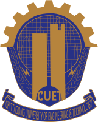

Education
University of Tennessee, Knoxville, TN, USA
Spring 2022 – Summer 2026- Advisors: Dr. Garrett S. Rose, Dr. Ahmedullah Aziz, Dr. Catherine Schuman
- Dissertation Topic: Mixed-Signal Memristive Systems for Resource-Constrained Computer Vision.
Texas State University, San Marcos, TX, USA
Fall 2020 – Spring 2022- Advisors: Dr. William A. Stapleton, Dr. Damian Valles Molina, Dr. Vangelis Metsis
- Dissertation Topic : Exploring the Feasibility of Social Distancing Measurement from Autonomous Vehicle.
University of Alaska, Fairbanks, AK, USA
Fall 2019 – Spring 2020 (not completed)- Advisors: Dr. Katrina Bossert, Dr. Richard Collins
- MS Research : FFT-based determination of gravity waves’ horizontal wavelength by manually detecting the region where there is a strong presence of gravity waves in the geospatial image from the AIRS instrument on the Aqua satellite.

Chittagong University of Engineering and Technology
March 2013 – November 2017- Advisors: Dr. Mohammad Istiaque Reja, Dr. Jobaida Akhtar
- Dissertation Topic : Modeling and Analysis of Z Folded Solid State Laser Cavity with Two Curved Mirrors